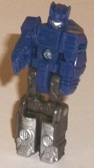
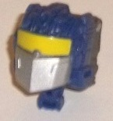
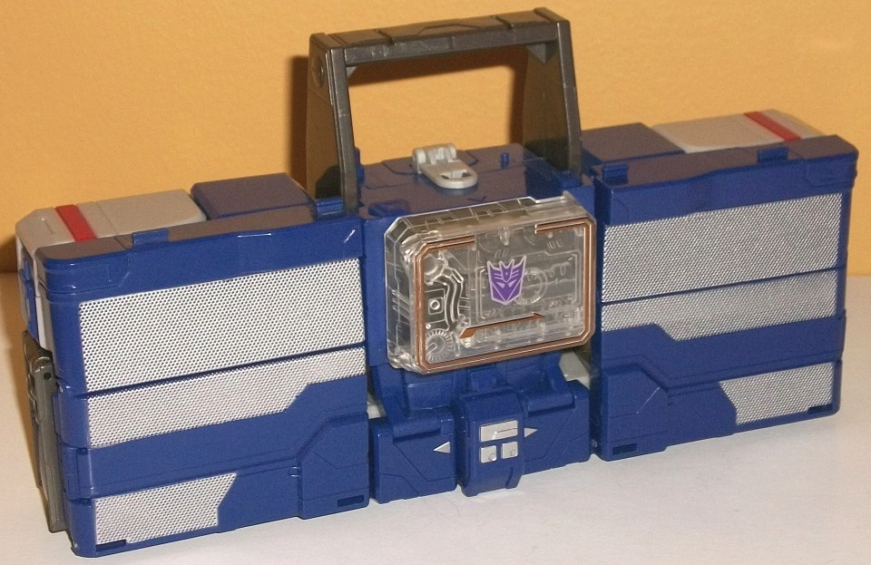
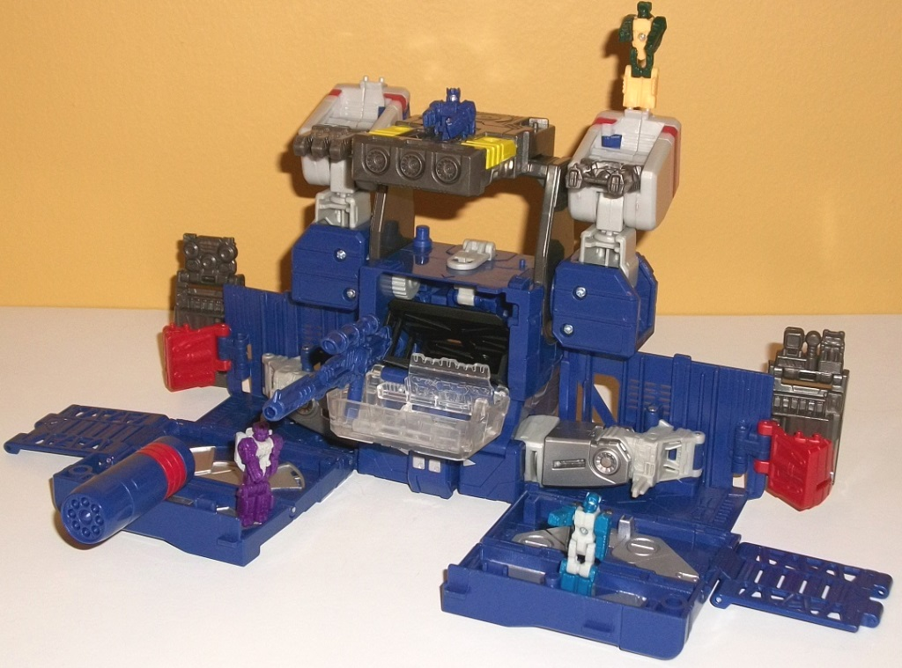
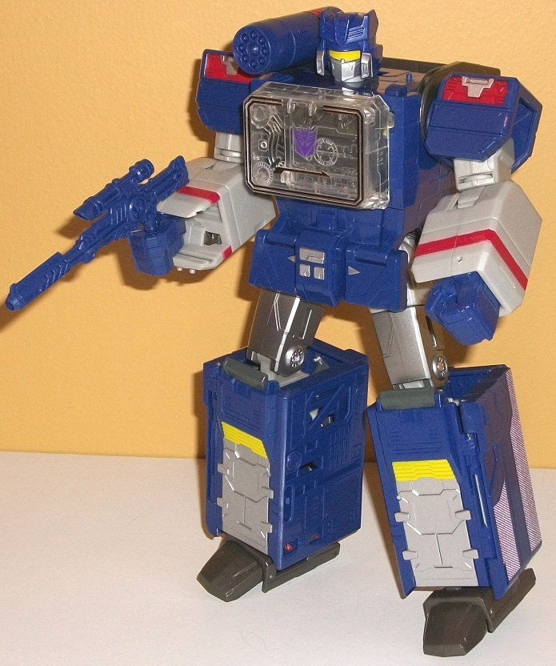

Allegiances
: Decepticon
Size
: Leader
Difficulty of Transformation to Base
:
Medium
Difficulty of Transformation to Robot
:
Medium
Color Scheme
: Dark periwinkle, light
milky gray, and some clear plastic, silver, chrome bronze, yellow, dark
milky semi-metallic brownish gray
Rating
: 8.4
(NOTE: Because this is a repaint, this is not a full-blown review. This mainly covers any changes made to the mold and the color scheme, and merely compares it to Titans Return Blaster w/ Twincast. For a review on the mold itself, read the review of Titans Return Blaster w/ Twincast here .)


Since Soundwave is a
remold of Blaster, Soundblaster is a remold of Twincast. (Like with Twincast,
the Titan Master Soundblaster gets his name from a Japanese recolor of
the character he forms the head for.) In robot mode, Soundblaster basically
looks like Soundwave without a little shoulder cannon. He actually shares
the same arm and leg pieces as Twincast, but the chest and head have been
remolded to basically be miniature replicants of Soundwave's face and chest.
So he's got the rectangle in the center of the chest, and amazingly intricate
little detailing on the headsculpt-- even all the little lines in the headcrest
are there! He's also got silver paint on the lower legs and faceplate--
but unfortunately, no other paint is used in this mode. Thus, the dark
blue/periwinkle shade and the dark brownish gray are by far the most common
colors in this mode. They don't clash, but they don't look interesting
either. In head mode, Soundblaster has the "Leader class Titan Master"
syndrome in that he looks like an incomplete head. The face looks great--
he's got the yellow visor and silver faceplate of Soundwave, and is pretty
spot-on-- but there's not much of a forehead to the toy, and what forehead
there is is covered with circuitry and interface detailing that makes it
look like an exposed robotic brain. On one level this is cool-looking and
helps make the head look more unique, but on the other hand if you use
Soundblaster on a Titan Master toy WITHOUT a helmet it looks kinda weird.



The Titans Return version
of Soundwave is fairly accurate to Soundwave's traditional color scheme;
that is, he's mostly a dark blue and a light gray. The light gray is your
typical bland milky shade, though it's only REALLY prevalent in the arms,
thankfully. The upper legs are mostly painted silver, except for the hip
ratchets; other than that, there's some small connector parts that are
milky gray, but it's definitely a secondary color. The main blue color
is actually a nice dark perwinkle-- and I quite like perwinkle, so I think
this is a nice slight change from the usual "regular" dark blue on Soundwave.
One color I'm not jazzed about, though, is the dark brownish gray on the
handle, the interior cassette/missile launcher piece, and the feet and
a few other minor parts. It's got a bit of glitter in it so it's semi-metallic
at least, but I would've preferred black in its place instead. I generally
don't like these dirty "impure" shades. Finally, there's also some clear
plastic on the chest, with some nice chrome bronze lining, which looks
really spiffy. There's a pretty good number of paint apps on Soundwave
too, with some red on the shoulders, shoulder cannon, and lower legs. Another
shade of paint that's used a lot on the toy is silver, which is used liberally
on the lower legs/speakers, as well as a bit on the sides of the helmet,
shoulders, and "buttons" on the pelvis. A minor nice change is the yellow
on the lower legs and on the missile launcher that's in the chest and is
used in base mode.
As far as mold changes,
there's easily enough to make Soundwave his own 'Bot. He's still clearly
the same mold as Blaster as far as the transformation and basic structure
of each mode, but the look has been changed enough where the only "remnant"
of Blaster is the gun, which is unchanged. As for the mold changes-- the
helmet that surrounds the Titan Master head is obviously new, and very
G1-esque in its proportions, with the forehead/headcrest a bit too large.
Otherwise it looks good. The chest is brand new, to line up with Soundwave's
traditional chest design, and the waist and hip flaps have been remolded
to have faux cassette player mode "buttons" on them. Soundwave also has
his shoulder cannon, which is quite well-proportioned and definitely gives
him some added firepower. That said, it doesn't store anywhere in cassette
player mode, which is a fairly significant oversight, methinks. By far
the biggest mold changes to Soundwave are his lower legs, though, which
form the sides of his cassette player mode; not only have the mold details
been changed on the front of the robot legs to be more G1-accurate (i.e,
no visible speakers), but in player mode the speakers take up MUCH more
of the side areas-- with bars for speakers instead of the more "old-school"
circular speakers that were present on Blaster. It's a really unique look
compared to most previous cassette player TFs, and I love it-- it helps
"modernize" the toy ever-so-slightly despite the fact that it's still a
cassette player. Plus that's a lot of silver paint, which is always lovely.
As a whole, Titans Return
Soundwave is a slight improvement over Blaster, with the dark periwinkle
color being a really nice main shade. Although I'm not a huge fan of the
light milky gray and brownish gray, it is better than the ugly brown on
much of Blaster. The mold detailing is also extensive enough to make Soundwave
his own character and not obviously a Blaster retool, with some nice unique
detailing on the lower legs/sides of the player mode, in particular. The
base mold still has all the same issues and highlights Blaster has, but
overall out of the two I'd recommend Soundwave more.
Reviews by Beastbot